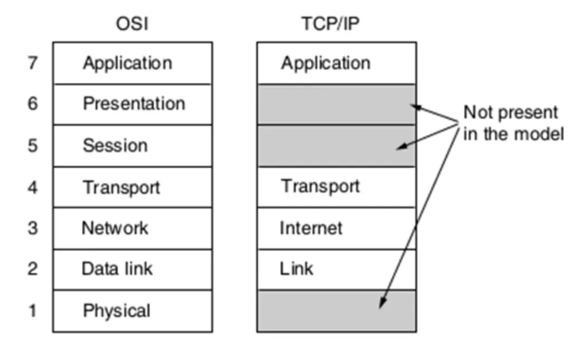

Redes de Datos
Cómo viaja un mensaje de una compu a otra, capa por capa, y qué problema resuelve cada una.
Resumen no juzgado. Todavía nadie evaluó si alcanza para estudiar solo con esto.
Qué cae más
El sitio no tiene todos los exámenes que se tomaron, así que esto es una pista y no una promesa. Tocá un tema para ver en qué exámenes salió.
1° parcial
Sale de 7 exámenes de este sitio.
Satélitesen 2 de 7
RFIDen 2 de 7
2° parcial
Sale de 11 exámenes de este sitio.
Fragmentaciónen 3 de 11
Sink treeen 2 de 11
OSPF y BGPen 2 de 11
Direccionesen 2 de 11
Transporteen 2 de 11
Final
Sale de 4 exámenes de este sitio.
ALOHAen 2 de 4
ARPen 2 de 4
TCPen 2 de 4
Mediosen 2 de 4
Rendí un examen viejo
Elegís uno real y lo hacés con reloj, sin ver la resolución. Al entregar te corregís y ves qué repasar.
Qué vas a encontrar
La materia se estudia subiendo por las capas. Primero el cable y las ondas, después la trama, después el paquete, por último el segmento. Cada capa le da un servicio a la de arriba y se apoya en la de abajo.
| Capa | Qué resuelve | Dónde se toma |
|---|---|---|
| Física | Mandar bits por cobre, fibra o aire | 1° parcial |
| Enlace | Pasar tramas de un punto al siguiente y compartir el canal | 1° parcial |
| Red | Encontrar el camino entre redes distintas | 2° parcial |
| Transporte | Comunicar dos programas, de extremo a extremo | 2° parcial |
Fuente: Teoría, Capa Física, Introducción a las Redes de Datos, páginas 8 a 13.
Cómo está organizado el examen
Revisé 27 hojas de 2023 a 2026: 4 finales de 2023, 11 del 1° parcial y 12 del 2°, estos de 2024 a 2026. No hay parciales de 2023 en el Drive. Los finales son hojas de la cátedra. La mayoría de los parciales son recuerdos que subieron alumnos, así que el dato de la forma sirve y la redacción exacta puede variar.
- Teórico escrito. Es la forma que más se ve. Son diez consignas de un punto, cortas, de explicar o comparar. Algunas comisiones usaron cinco consignas con ítems a y b.
- Múltiple choice. Apareció una vez, el 28/07/2026. Diez preguntas de cuatro opciones.
- Práctica aparte. La traen tres hojas. En el 1° parcial pidió cableado estructurado, hub y switch, CSMA/CD y HDLC (28/08/2024). En el 2° pidió subredes y OSPF contra RIP (29/10/2024 y 21/10/2026).
- Final. Los cuatro de 2023 tienen diez ítems que mezclan todas las capas, con alguna cuenta de prefijo de red. No hay finales más nuevos en el Drive. Mirá cómo venían.
Una consigna del 20/10/2026 trae el criterio de corrección: pertinencia teórica 40%, vocabulario técnico 30%, fundamentación 25% y ortografía 5%, en 60 minutos. Vale escribir con los nombres técnicos del apunte.
Las comisiones no toman lo mismo
En general, el 1° parcial es modelos, capa física y enlace, y el 2° es red y transporte. Pero dos hojas del 1° parcial (06/08/2024 y 28/07/2026) preguntan capa de red. Preguntá en tu comisión qué entra antes de descartar nada.
Lo que más vuelve
Conté las hojas de cada parcial donde aparece cada tema. Los finales de 2023 van aparte, abajo de la tabla.
| 1° parcial, sobre 11 hojas | Veces | 2° parcial, sobre 12 hojas | Veces |
|---|---|---|---|
| Interferencias en WiFi | 5 | Control de errores en TCP y UDP | 5 |
| Hub y switch | 4 | Clases y prefijos | 4 |
| RFID | 4 | Sink tree | 4 |
| Órbitas de satélites | 4 | Tasa justa | 4 |
| ALOHA y CSMA | 4 | TCP y UDP | 4 |
| Ahorro de energía en WiFi | 3 | Fragmentación | 3 |
| Compatibilidad de Ethernet | 3 | OSPF y BGP | 3 |
En los 4 finales de 2023, los cuatro piden una cuenta de dirección con máscara y los cuatro tocan hub y switch o Switched Ethernet. ARP aparece en 3. ALOHA, congestión y la ventana de TCP, en 2.
El 2° parcial del 29/10/2026 trae las mismas diez consignas que el del 31/10/2025. El del 27/10/2026 repite casi todo el del 29/10/2025. Vale hacer los exámenes viejos antes que leer más.
La idea que ordena todo
Cada capa tiene su unidad de datos, su dirección y su aparato. Si te perdés en una consigna, ubicá primero en qué capa estás.
| Capa | Unidad | Dirección | Aparato |
|---|---|---|---|
| Física | Bit | Ninguna | Hub, repetidor |
| Enlace | Trama | MAC, 6 bytes | Switch, Access Point |
| Red | Paquete | IP, 32 o 128 bits | Router |
| Transporte | Segmento | Puerto, 16 bits | Los hosts |
Las capas 1, 2 y 3 trabajan salto a salto. Transporte es la primera que opera de extremo a extremo, y por eso vive en los hosts.
Fuente: Teoría, Capa de Transporte, Servicios y Primitivas, página 3. Capa de Enlace, Redes Ethernet, páginas 6, 11 y 12. Capa de Red, IPv4, páginas 10 y 21.

En criollo
Pensá en un envío por correo. El camión es la capa física. Cada tramo entre sucursales es la de enlace. La decisión de qué sucursal sigue es la de red. Y el que confirma en la puerta de tu casa que llegó todo entero es la de transporte.
Cómo usar este resumen
- Empezá por la página del parcial que tenés.
- Mirá primero los bloques marcados con lo que se tomó. Te dicen cuántas veces apareció y en qué fecha.
- Hacé el quiz del final de cada página para saber qué te falta.
- Después intentá las consignas de Ejercicios escribiendo de memoria.
Solo hay resolución para las tres guías de problemas de la cátedra. Los exámenes no traen ninguna, y este resumen no las inventa. Cuando una consigna tiene respuesta en el apunte, te dejo la explicación con el archivo y la página para que la compares.